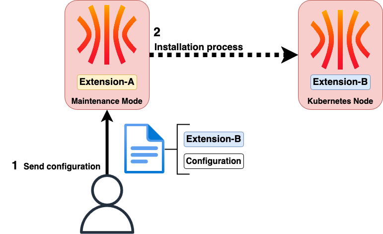

Now that you're familiar with the core features, let's explore how to enhance your experience using extensions. Extensions allow you to add new functionalities and customize your workflow.
Why Install Extensions?
Since Talos is a minimalist OS, it doesn’t include all the tools you might expect from a traditional OS. If you want to install an EDR agent (like CrowdStrike), a driver for an NVIDIA card, or any other program that cannot run in Kubernetes (including static pods), you’ll need to use extensions.
There are two ways to install an extension on Talos:
- By using a custom Talos image that already includes the extension;
- Or by specifying an OCI image containing the extension to be installed.
Each method corresponds to a different use case.
The custom image is useful when the extension is necessary for Talos in maintenance mode (when it is waiting for its configuration). A common example of this case could be a driver (e.g. a RAID card) whose presence is mandatory for Talos to detect the device (if it doesn’t find a disk, it cannot be installed).
The other method, which involves installing the node using a specific OCI image(installer), is useful when the extension needs to be active while the node is already running. For example, a RuntimeClass to launch MicroVMs in Kubernetes, a Tailscale VPN…
Of course, it is possible to use both methods simultaneously. In the case of the RAID driver, it must be present in the base Talos image for the disk to be recognized, and then reinstalled via the OCI image so that the extension is retained after the OS installation. Thus, it is needed both before and after installation.
An important point to keep in mind: if you specify in the Talos configuration an image providing an extension (in the machine.install.image field or during an upgrade), it will replace the extensions already present.

In summary, here’s what you need to remember:
- If you install a custom Talos image and use the default OCI image (ghcr.io/siderolabs/installer:v1.x.x), the extension will be retained after the node installation.
- If you install a custom Talos image and use a different OCI image (in the configuration or during an update), the extension will not be retained.
How do we install an extension?
Let’s take a concrete example. I often use Proxmox in my labs. It’s a hypervisor I appreciate for its flexibility and simplicity of use. Notably, it has a handy feature: displaying the IPs of VMs in the web interface. To achieve this, you need to install an agent on each VM so they can report this information.
Thus, we need to install the qemu-guest-agent on our nodes. Let’s see how to do this.
Using a Custom Talos Image
Installing a Custom Talos Image
The simplest method to create this image, which already contains the extension, is to use Factory. This site allows you to fill out a form to create an image tailored to your needs (architecture, kernel args, Talos version, extensions).
You will be presented with a page asking you to check the various extensions you want to install. Simply check qemu-guest-agent and validate.

Depending on how you want to install your machine, you will have the choice between:
- Downloading the ISO image;
- Downloading the disk image (raw);
- Using a PXE script.

Your image request is associated with an ID (ce4c980550dd2ab1b17bbf2b08801c7eb59418eafe8f279833297925d67c7515 in my case) that you can use to retrieve the image at any time. It is also possible to script the image generation using the Factory API. When you finish filling out the form, you get a summary of your request “as code” in YAML:
customization:
systemExtensions:
officialExtensions:
- siderolabs/qemu-guest-agent
You can also use this summary to re-generate the image like this:
$ yq eval -o=json customization.yaml > customization.json # Convert it to JSON
$ curl -s -X POST https://factory.talos.dev/schematics \
-H "Content-Type: application/json" \
-d @customization.json
{"id":"ce4c980550dd2ab1b17bbf2b08801c7eb59418eafe8f279833297925d67c7515"}
From there, you can easily integrate the image generation into a pipeline or automation script… Or continue using the Factory web interface, it’s up to you 😄.
By downloading the raw disk image, you can then use it to create your VMs in Proxmox or any other hypervisor of your choice with the pre-installed extension.
Otherwise, you can also use image OCI to upgrade an existing Talos installation with the extension. You can use it like below:
schematicid=376567988ad370138ad8b2698212367b8edcb69b5fd68c80be1f2ec7d603b4ba
talosctl upgrade -i factory.talos.dev/installer/${schematicid}:v1.12.1 --nodes <node-ip>
Now you can customize your Talos image with the extensions you need!
Want to deep dive into extensions ? Check out my article Customizing Talos with Extensions where I explore how to create your own extensions.